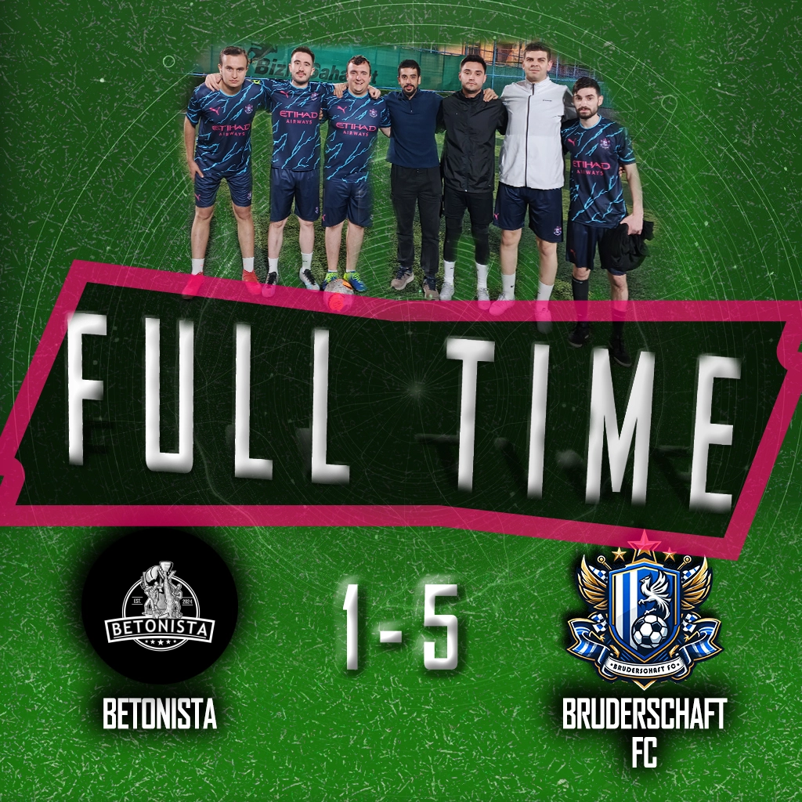
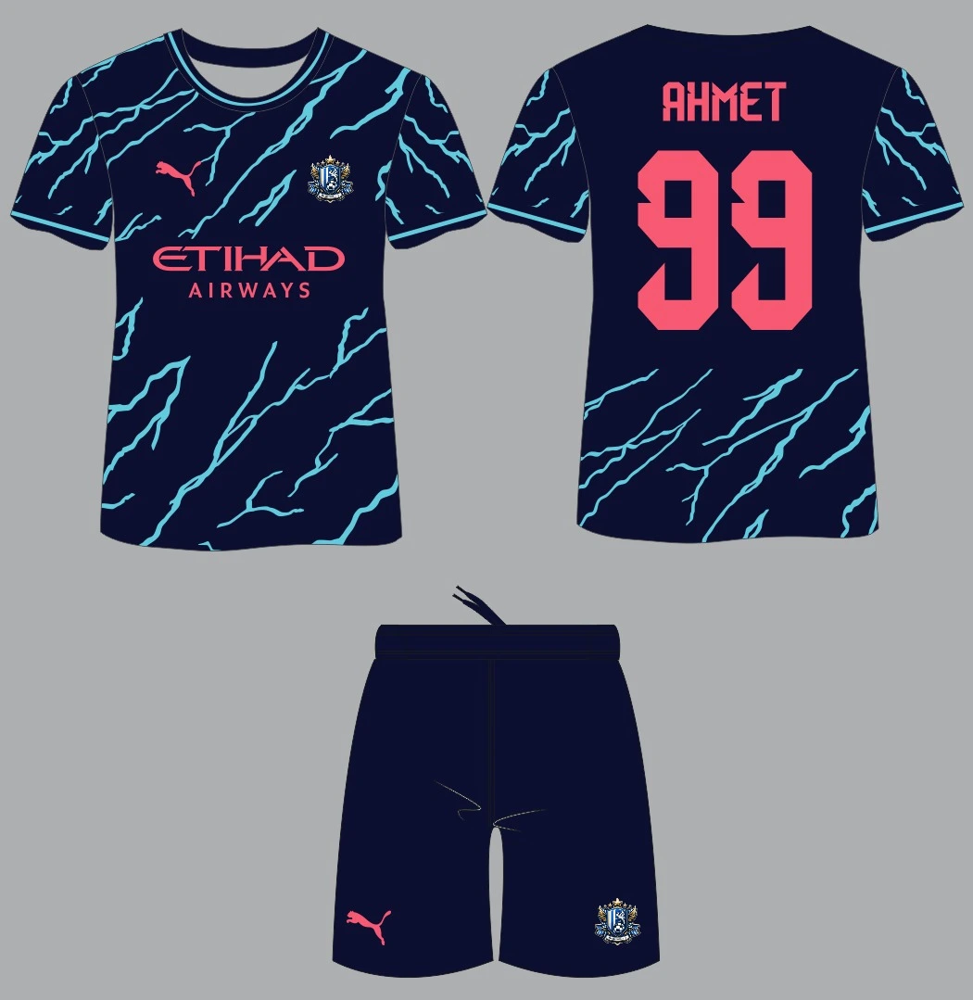

Bruderschaft FC, dün oynanan maçta rakibi Club Betonista'yı 5-1 gibi net bir skorla mağlup etti. Takımımız, sergilediği üstün performansla taraftarlarımızı bir kez daha gururlandırdı.
Maçın ilk dakikalarından itibaren kontrolü eline alan Bruderschaft FC, hızlı ve etkili bir oyun sergiledi. İlk golümüz, 4. dakikada Yasin Büyükköse'nin şık kafa vuruşuyla geldi. Ancak, Betonista 14. dakikada Anıl Erhan Doğan'ın golüyle durumu eşitledi. Bu golle beraber takımımız, baskısını artırarak 17. dakikada Tugay Tuna'nın attığı golle durumu 2-1 yaptı. İkinci yarının başlarında, 31. dakikada Cihangir Binbir'in attığı golle farkı ikiye çıkardık ve 35. dakikada Can Öztürk'ün golüyle skoru 4-1 yaptık. Maçın 41. dakikasında Betonista'dan Ramazan Emir Kaya sarı kart gördü. Maçın bitimine dakikalar kala, 43. dakikada Tugay Tuna'nın attığı golle maçı 5-1 önde tamamladık.
İkinci yarıda takımımız oyunu kontrol altında tutarak skoru korudu. Maç toplamda 48 dakika sürdü ve bu süre boyunca rakip takımın etkili olmasına izin vermedik.
Teknik direktörümüz Berkay Kızılgil, maç sonrası yaptığı açıklamada, "Oyuncularımız bugün sahada müthiş bir performans sergiledi. Tüm taraftarlarımıza bu galibiyeti armağan ediyoruz. Takım olarak çalışmalarımızın meyvesini alıyoruz ve önümüzdeki maçlar için daha da motiveyiz." dedi.
Bu önemli galibiyetle birlikte Bruderschaft FC, ligdeki yükselişini sürdürüyor. Takımımızı desteklemeye devam eden tüm taraftarlarımıza teşekkür ederiz. Bir sonraki maçımızda görüşmek üzere!
Bruderschaft FC olarak yeni sezona özel hazırladığımız yeni formamızı tanıtmaktan büyük heyecan duyuyoruz! Modern ve enerjik tasarımıyla dikkat çeken bu forma, takımımızın sahadaki dinamizmini ve birlikteliğini yansıtıyor.
Yeni formamızda, deniz mavisi ve gece mavisinin uyumlu birlikteliğiyle oluşturulan şimşek desenleri yer alıyor. Ön yüzde yer alan pembe Puma logosu ve Etihad Airways sponsorluğu, formaya şık bir görünüm kazandırırken, takımımızın armasını gururla taşıyoruz.
Arka yüzde oyuncu isimleri ve numaraları pembe renkte yer alarak formanın şıklığını tamamlıyor. Ahmet'in 99 numaralı formasıyla tanıtılan bu tasarım, hem estetik hem de fonksiyonel açıdan öne çıkıyor.
Yeni sezon formamızı hemen incelemek için web sitemizi ziyaret edebilirsiniz. Bruderschaft FC olarak, taraftarlarımızın desteğiyle sahada daha güçlü ve daha kararlı bir şekilde yer almayı dört gözle bekliyoruz!
Takımımıza ve yeni formamıza gösterdiğiniz ilgi için teşekkür ederiz. Birlikte daha nice başarılara imza atmak dileğiyle!
